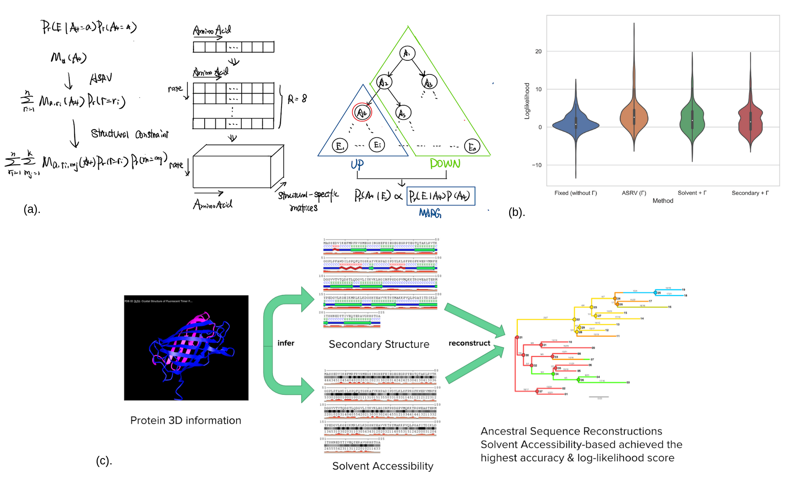

|
I'm a fourth-year undergraduate student at Columbia University majoring in Computer Science. I'm very fortunate to be advised by Prof. Itsik Pe'er and Prof. Elham Azizi and have been working on multiple projects in their labs. Before transferring to Columbia, I studied Physics at Colgate University. In Spring 2019, I attended a semester-long CS study abroad program at AIT-Budapest with focus on Compbio, during which I was advised by Prof. Péter Sárközy at Computational Biomedicine Workgroup, Budapest University of Technology and Economics (BME). |
{kind=link}
|
My research interests lie in Computational Biology, particularly in applying machine learning methods on high-throughput sequencing data to understand the underlying biological questions. |

|
We propose PICASSO (Phylogenetic Inference from Copy Number Alterations in ScrnaSeq Observations), a novel iterative approach to infer subclonal structure from tumor scRNA-seq data based on CNV predictions. Besides the model itself, I designed a fully automated simulation pipeline facilitated by Splatter, generating large-scale, synthetic observation matrices from the real scRNA-seq data. |
|
Yinuo Jin*, Alexandre Toberoff*, and Elham Azizi NeurIPS 2020, Workshop on Learning Meaningful Representations of Life (LMRL) Paper / Poster / Code We propose a cell segmentation framework incorporating shape-aware features in a deep learning model, with multi-level watershed and morphological post-processing steps. Our results show that incorporation of geometric features improves generalizability to segmenting cells in in situ tissue images, using solely in vitro images as training data. |
|
|  |
Report / Code We implemented multiple recently proposed algorithms for Ancestral Sequence Reconstruction (ASR), extending features to TreeTime, a phylogenetic analysis toolkit. |
|
Source code from Jon Barron's personal website |